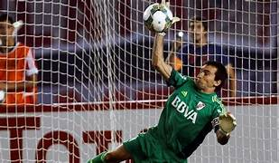

Son demasiados momentos iconicos los que ha tenido nuestro querido futbol Argentino, intentaremos nombrar algunos. Por ejemplo la famosa y recordada patada de Krupoviesa a Montenegro, utilizada como ultimo recurso, ya que "El Rolfi" se iba solo contra el arquero."Krupo" vio la roja y se hizo cargo de la mas famosa patada en la historia del futbol argentino. Tambien podemos recordar la atajada de Barovero a Gigliotti, un penal importantisimo, un partido complicado para los dos equipos (boca y River) que termino con la victoria de River. Otro momento iconico, la chilena del Licha Lopez, en el ultimo minuto del clasico de avellaneda, llega un centro al area y el licha resuelve con una chilena fenomenal para darle el gol a Racing. Nuestro futbol argentino esta lleno de momentos, cada foto que veas en esta pagina representa uno de ellos.